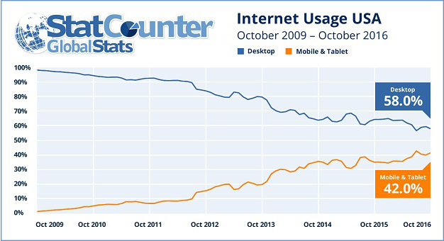
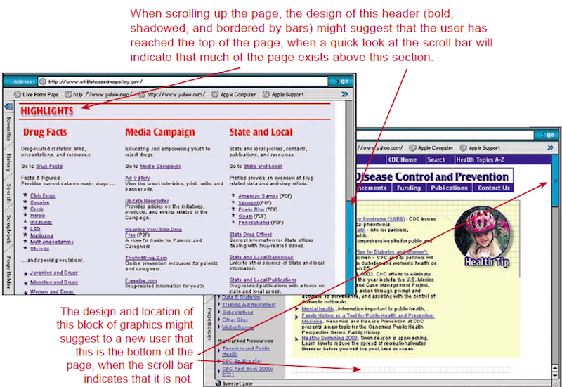
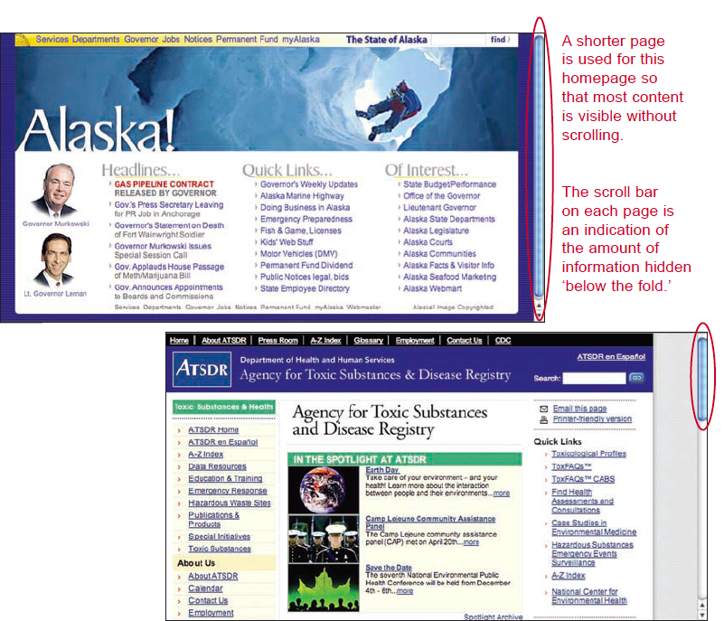
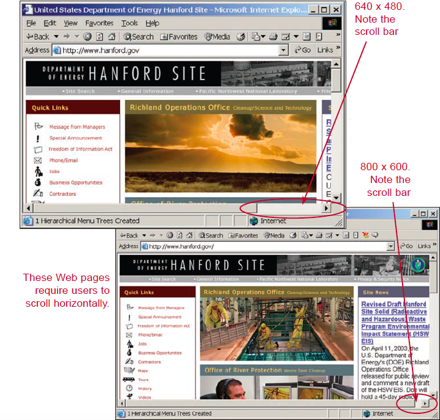
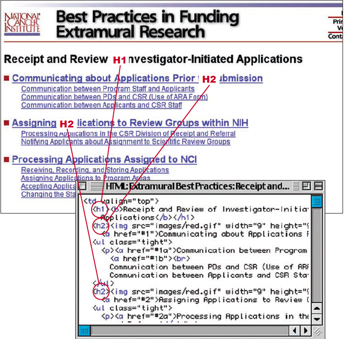
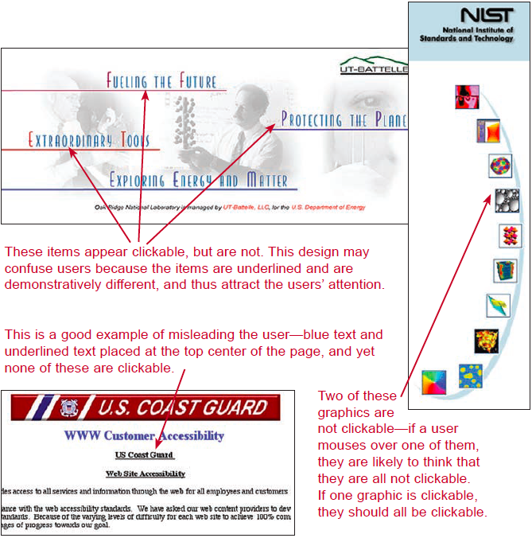

10 Tips for better User Experience

5 min read
1. Design for Slower Connection Speed
Guideline: Design for slow web connections such as 3G
Comments: In the United States at least eighty-nine percent (89%) of users have high speed access, but currently fourty-two percent (42%) of internet usage in the USA is used on phones and tablets

2. Do Not Display Unsolicited Windows or Graphics
Guideline: Do not have unsolicited windows or graphics ‘pop-up’ to users
Comments: Users have commented that unsolicited windows or graphics that ‘pop up’ are annoying, and Google has started to penalize sites that use these ‘pop-ups’å
3. Limit Homepage Length
Guideline: Limit the homepage to one screenful of information, if at all possible. If you have a longer homepage keep important information above the fold.
Comments: Any element on the homepage that must immediately attract the attention of users should be placed ’above the fold.’ Information that cannot be seen in the first screenful may be missed altogether—this can negatively impact the effectiveness of the Web site. If users conclude that what they see on the visible portion of the page is not of interest, they may not bother scrolling to see the rest of the page.
Some users take a long time to scroll down ’below the fold,’ indicating a reluctance to move from the first screenful to subsequent information. Older users and novices are more likely to miss information that is placed below the fold.
5. Avoid Scroll Stoppers
Guideline: Ensure that the location of headings and other page elements does not create the illusion that users have reached the top or bottom of a page when they have not.
Comments:In one study, three headings were positioned in the center of a page below a section of introductory text—the headings were located about one inch below the navigation tabs. When users scrolled up the page from the bottom and encountered these headings, they tended to stop, thinking the headings indicated the top of the page.
Similarly, users have been found to not scroll to the true bottom of a page to find a link because they encountered a block of text in a very small font size. This small type led users to believe that they were at the true bottom of the page. Other elements that may stop users’ scrolling include horizontal lines, inappropriate placement of ’widgets,’ and cessation of background color.

6. Set Appropriate Page Lengths
Guideline: Make page-length decisions that support the primary use of the Web page.
Comments: In general, use shorter pages for homepages and navigation pages, and pages that need to be quickly browsed and/or read online. Use longer pages to (1) facilitate uninterrupted reading, especially on content pages; (2) match the structure of a paper counterpart; (3) simplify page maintenance (fewer Web page files to maintain); and, (4) make pages more convenient to download and print.

7. Place Primary Navigation Menus in the Left Panel
Guideline: Place the primary navigation menus in the left panel, and the secondary and tertiary menus together.
Comments: [One study]((http://journals.sagepub.com/doi/abs/10.1177/154193120404801309) found that navigation times were faster when the primary menu was located in the left panel. Also, navigation performance was best when the secondary and tertiary menus were placed together. Placing a navigation menu in the right panel was supported as a viable design option by both performance and preference measures. Users preferred having the primary menu in the left panel, and grouping secondary and tertiary menus together, or grouping all three menu levels together. The best performance and preference was achieved when all three menus were placed in the left panel (placing them
8. Eliminate Horizontal scrolling
Guideline: Use an appropriate page layout to eliminate the need for users to scroll horizontally.
Comments: Google has stated that horizontal scrolling hurts mobile SEO. Also horizontal scrolling is a slow and tedious way to view an entire screen. Common page layouts including fluid and left-justified may require some users to scroll horizontally if their monitor resolution or size is smaller than that used by designers.

9. Use Headings in the Appropriate HTML Order
Guideline: Use headings in the appropriate HTML order.
Comments: Using the appropriate HTML heading order helps users get a sense of the hierarchy of information on the page. The appropriate use of H1-H3 heading tags also allows users of assistive technologies to understand the hierarchy of information.

10. Avoid Misleading Cues to Click
Guideline: Ensure that items that are not clickable do not have characteristics that suggest that they are clickable.
Comments: Symbols usually must be combined with at least one other cue that suggests clickability. In one study, users were observed to click on a major heading with some link characteristics, but the heading was not actually a link.
However, to some users bullets and arrows may suggest clickability, even when they contain no other clickability cues (underlining, blue coloration, etc.). This slows users as they debate whether the items are links.
